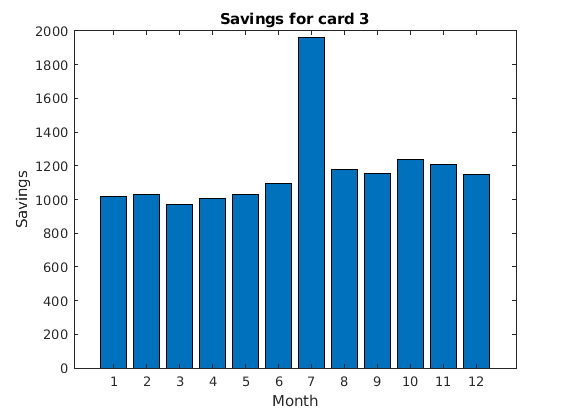
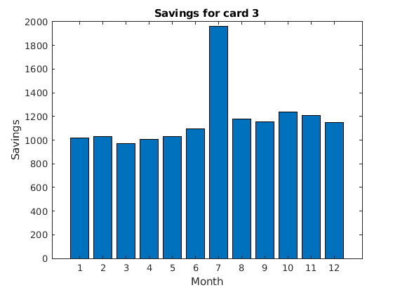

Contents
Homework 0 - Question 2 - Mrugank Dake
clear; clc; close all;
3a)
A column vector of 12 elements each of 3000 representing a steady income source of 3000 per month
income = 3000 * ones(12, 1);
disp('The column vector is:')
disp(income)
The column vector is:
3000
3000
3000
3000
3000
3000
3000
3000
3000
3000
3000
3000
3b)
Due to the TAship, the income for the 7th month is now 4000. Therefore, the resulting income vector becomes:
income(7) = 4000;
disp('The update vector is:')
disp(income)
The update vector is:
3000
3000
3000
3000
3000
3000
4000
3000
3000
3000
3000
3000
3c)
The expenses matrix has four columns: rent, grocery, clothing, fun in the order. The expenses for each month are kept constant and also the expense across each domain is also kept constant, say 500 each.
expenses = repmat(500, 12, 4);
disp('The expenses matrix is:')
disp(expenses)
The expenses matrix is: 500 500 500 500 500 500 500 500 500 500 500 500 500 500 500 500 500 500 500 500 500 500 500 500 500 500 500 500 500 500 500 500 500 500 500 500 500 500 500 500 500 500 500 500 500 500 500 500
3d)
The saving vector is the difference between the income vector and the row-sum vector of the expenses matrix
savings = income - sum(expenses, 2);
disp('The savings vector is:')
disp(savings)
The savings vector is:
1000
1000
1000
1000
1000
1000
2000
1000
1000
1000
1000
1000
3e)
The discount_vector is a vector with a linear spacing from 1 to 0.8 with 12 equal-spaced intervals
discount_vector = linspace(1, .8, 12); % Transforming the grocery and clothing columns i.e. columns 2 and 3 of the expenses matrix % using the discount matrix expenses(:, 2:3) = expenses(:, 2:3) .* discount_vector'; disp('The resulting expenses matrix after discounting is:') disp(expenses)
The resulting expenses matrix after discounting is: 500.0000 500.0000 500.0000 500.0000 500.0000 490.9091 490.9091 500.0000 500.0000 481.8182 481.8182 500.0000 500.0000 472.7273 472.7273 500.0000 500.0000 463.6364 463.6364 500.0000 500.0000 454.5455 454.5455 500.0000 500.0000 445.4545 445.4545 500.0000 500.0000 436.3636 436.3636 500.0000 500.0000 427.2727 427.2727 500.0000 500.0000 418.1818 418.1818 500.0000 500.0000 409.0909 409.0909 500.0000 500.0000 400.0000 400.0000 500.0000
3f)
First, the savings can be updated with a second column that represents the savings after taking into account the discounted expenses
savings(:, 2) = income - sum(expenses, 2); % The savings can then be visualized as a grouped bar plot with the initla % and the discounted savings figure; h = bar(savings, 'grouped'); set(h, {'DisplayName'}, {'savings_{initial}', 'savings_{discounted}'}') xlabel('Month') ylabel('Savings') title('Monitoring savings with and without discount') legend()

3g)
The Gaussian vector that accounts for the random variation can be constructed using the randn. The standard deviation of 100 can be incorporated by multiplying each element of the resulting vector with 100. This Gaussian distribution is already centered at 0. Hence the mean of 0 is already accounted for.
gaus_vector = 100 .* randn(12, 1); % The fun is the column 4 of the expenses matrix. Adding gaus_vector to the % fun column: expenses(:, 4) = expenses(:, 4) + gaus_vector; % Updating the savings with the incorporation of noise in fun savings(:, 3) = income - sum(expenses, 2); figure; h = bar(savings, 'grouped'); set(h, {'DisplayName'}, {'savings_{initial}', 'savings_{discounted}', 'savings_{with random noise}'}') xlabel('Month') ylabel('Savings') title('Monitoring savings with, without discount and random fun') legend() % Visualizing the random vector that was added to the fun column can be % done using the histogram function figure; histogram(gaus_vector)


3h)
We can create a structure for each card with three fields: points from the table given in the question, rewards computed my multiplying the points to the expenses computed in 3g and the savings that can be computed by adding the rewards to the savings
card(1).points = [0, 1, 2, 3] ./ 100; card(2).points = [0, 2, 2, 1] ./ 100; card(3).points = [0.1, 1, 1, 2] ./ 100; for c = 1:numel(card) figure; card(c).rewards = expenses * card(c).points'; card(c).savings = savings(:, 3) + card(c).rewards; bar(card(c).savings) title(['Savings for card ', num2str(c)]) xlabel('Month') ylabel('Savings') end rewards_array = [card.rewards]; [m6, i6] = max(sum(rewards_array(1:6, :))); disp(['The highest rewards for the first 6 months is for the card ', num2str(i6), ... ' with the total reward of ', num2str(m6)]) [m12, i12] = max(sum(rewards_array(1:6, :))); disp(['The highest rewards for all the months is for the card ', num2str(i12), ... ' with the total reward of ', num2str(m12)])
The highest rewards for the first 6 months is for the card 1 with the total reward of 162.4023 The highest rewards for all the months is for the card 1 with the total reward of 162.4023
 
